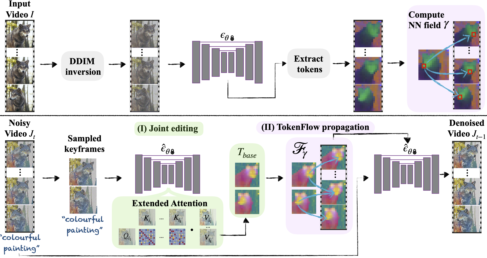

Abstract
We present a framework for zero-shot text-driven editing of natural videos -- given a video and a target text-prompt describing the edit, our method generates a high-quality video that adheres to the target edit expressed by the prompt, while preserving the spatial layout and dynamics of the original video. Our method utilizes a pre-trained and fixed text-to-image diffusion model, and only involves simple operations in its feature space.
We show how to achieve temporal consistency by leveraging fine-grained semantic correspondences across frames, readily available in the feature space of the model. We demonstrate consistent, high-quality semantic edits on a variety of high-resolution videos.
Method
|
We observe that the level of temporal consistency of a video is tightly related to the temporal consistency of its feature representation, as can be seen in the feature visualization below.
The features of a natural video have a shared, temporally consistent representation. When editing the video per frame, this consistency breaks. Our method ensures the same level of feature consistency as in the original video features.
|
| Original |
Per Frame Editing |
Ours |
|
|
|
|
|
|
|
|
|
Our key finding is that a temporally-consistent edit can be achieved by enforcing consistency among the internal diffusion features across frames during the editing process.
We achieve this by propagating a small set of edited features across frames, using the correspondences between the original video features.
Given an input video I, we invert each frame, extract its tokens (i.e., output features from the self-attention modules), and extract inter-frame feature correspondences using a nearest-neighbor (NN) search. At each denoising step:
- We sample keyframes from the noisy video J_t and jointly edit them using an extended-attention block. The set of resulting edited tokens is T_base.
- We propagate the edited tokens across the video according to the pre-computed correspondences of the original video features. To denoise J_t, we feed each frame to the network and replace the generated tokens with the tokens obtained from the propagation step (ii).
|
|  |
More results
Hover to see source video and target text.
|
a robot spinning a silver ball
Paper
 |
TokenFlow: Consistent Diffusion Features for Consistent Video Editing
Michal Geyer *, Omer Bar Tal *, Shai Bagon, Tali Dekel.
(* indicates equal contribution)
[paper]
|
Supplementary Material
Bibtex